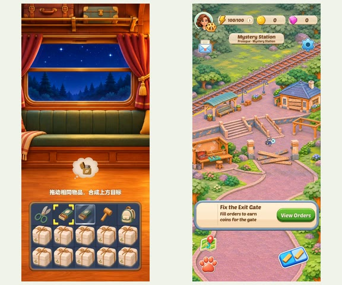

试玩找到了卡体力的位置
先做长椅早餐亭攒钱时
第 8 步 用光体力
跳过捷径早餐亭建设
第 10 步 最低余 6 体力
同一套规则跑了两条路线，待真人首玩验证。
打开数值表和两条试玩记录
从实录到剪辑
内部审阅样例 · 已归档
合成卡顿修完有对照
11次 · 修前
0次 · 修后
同一模拟器上，超过 100 毫秒的操作。另已通过内网更新恢复棋盘整理。
正式安卓包待手机复测。
从单项接力到五套并行
- Pip 动画
- 2/2
- 两项任务回传，另一台电脑完成复验。
- 五套棋盘
- 16/17
- 已整合，最后一项独立检查取消。
工作站任务回执 · 原始任务需公司内网
每周项目增量对比 11 月 19 日 → 26 日 · 25 项
版本录屏对照
11 月 16 日内测版11 月 26 日正式工程

两版实跑 · 场景不同
盖布解锁 · 本周同一操作
正式工程与功能 · 16 项
| 变化项 | 上周 | 本周 |
|---|---|---|
| 默认玩法与出包模拟器已复验 | 上周 内测车站版，备选开场并行 | 本周 统一车站版，出包可拦错 证据 |
| 序章开场和续玩桌面已实点 | 上周 车厢教学后进车站 | 本周 5 秒片头可跳过，旧档可续 证据 |
| 章节入口与场景桌面已复验 | 上周 三处场景已能试玩 | 本周 进早餐亭后首项建设会弹出 证据 |
| 订单与续单正式工程交接 | 上周 主线与续单已走通 | 本周 36 个固定单、6 个循环模板、14 个副单 |
| 生产器与补货正式工程交接 | 上周 基础合成和交单已测 | 本周 六个设备每 45 秒补货 |
| 建设与体力节奏自动路线已有结果 | 上周 三处场景、23 步建设 | 本周 补低体力，早餐亭第 8 步发现卡点 |
| 初始棋盘与解锁奖励桌面实跑 | 上周 已有开局棋盘和解锁 | 本周 初始盘重排，盖布奖励只发一次 |
| 棋盘整理内网更新已发 | 上周 已验常用棋盘操作 | 本周 v96 内网补回整理 证据 |
| 棋盘拖拽与订单横滑桌面已复验 | 上周 已调整订单显示 | 本周 拖走棋子后原格恢复，顾客跟随横滑 证据 |
| 仓库、售价与撤销规则及事务回归 | 上周 已有资产收支检查 | 本周 先用盘面再扣仓库，70 种材料卖出换体力 |
| 顾客动作与交付桌面已复验 | 上周 已有接物和交单反馈 | 本周 五位顾客实跑待机、眨眼、接物和退场 |
| 连续交单、升等与到账桌面专项 | 上周 已有金币和建设回执 | 本周 第二单排队演出，奖励到账后退场 证据 |
| 操作按钮、文案与竖屏桌面已验证 | 上周 调整订单、奖励和底栏 | 本周 按钮统一，长短屏复测 |
| 合成操作卡顿模拟器候选 | 上周 已减少重复刷新 | 本周 同机卡顿 11 → 0，待真机验 证据 |
| 章节资源下载桌面限速与分包验证 | 上周 试过早餐分享单项分包 | 本周 首次进客栈 188 → 19.9 MB |
| 旅行等待、棋盘伙伴与触感源码记录 · 待实测 | 上周 已有进章等待和触感候选 | 本周 盖章、伙伴和触感有改动，待实跑 证据 |
内容产出与候选 · 5 项
| 变化项 | 上周 | 本周 |
|---|---|---|
| 前 20 级玩法候选独立候选 | 上周 已能试玩前三处场景 | 本周 独立候选跑到晨市开张 |
| 场景素材与返修美术候选与归档 | 上周 已有实景和待改场景图 | 本周 松湾做出三态；米洛恢复 16 张选图 |
| 居民概念概念候选 | 上周 已有居民草图 | 本周 新增六位角色概念，待采用 |
| 五套棋盘主题整合候选 | 上周 试玩盘检查过 582 件物品 | 本周 五套棋盘已合版，16/17 项完成 证据 |
| 宣传短片内部样例归档 | 上周 有修门、合成及救援样片 | 本周 归档两段成片与编辑工程，待投放 |
计划节点
23 日候选版已分段复测，验收待确认
24 日试投未见回执
25–27 日公司内部功能测试整批结果待确认